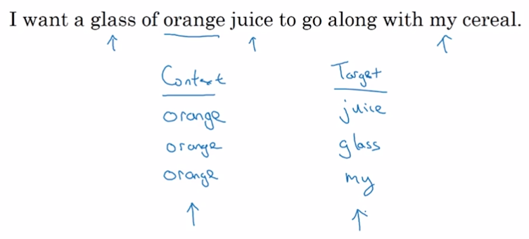

Mikolov et. al., 2013. Efficient estimation of word representations in vector space
1.1. 构造监督学习问题
学习Word Embedding本是一个非监督学习的问题，可以先把它转换成等价的监督学习问题，然后GD迭代求出模型的参数。
通过抽取上下文context和目标target词配对，来构造监督学习问题。
定义：
One-hot Vector: Oc
Embedding Matrix: E
Embedding Vector: Ec
有：
Ec = E * Oc
Word2Vec与NLP语言模型主要区别在于选取context和target的方式不同。
Word2Vec选择context前后的k范围内的词作为target，与context构造一对。
context是特征，target是标签。

一个特征对应多标签，这样构造出来的监督问题不是为了预测标签，而是为了学习Embedding。
1.2. 模型结构
Word2Vec与NLP语言模型使用的网络结构类似 ，通过NN建立context到target的映射。
由softmax生成的概率模型为：
公式中是与输出t有关的参数。
定义损失函数为：
通过迭代可以学到E的参数和softmax的参数。softmax参数就是，E的参数就是embedding matrix。